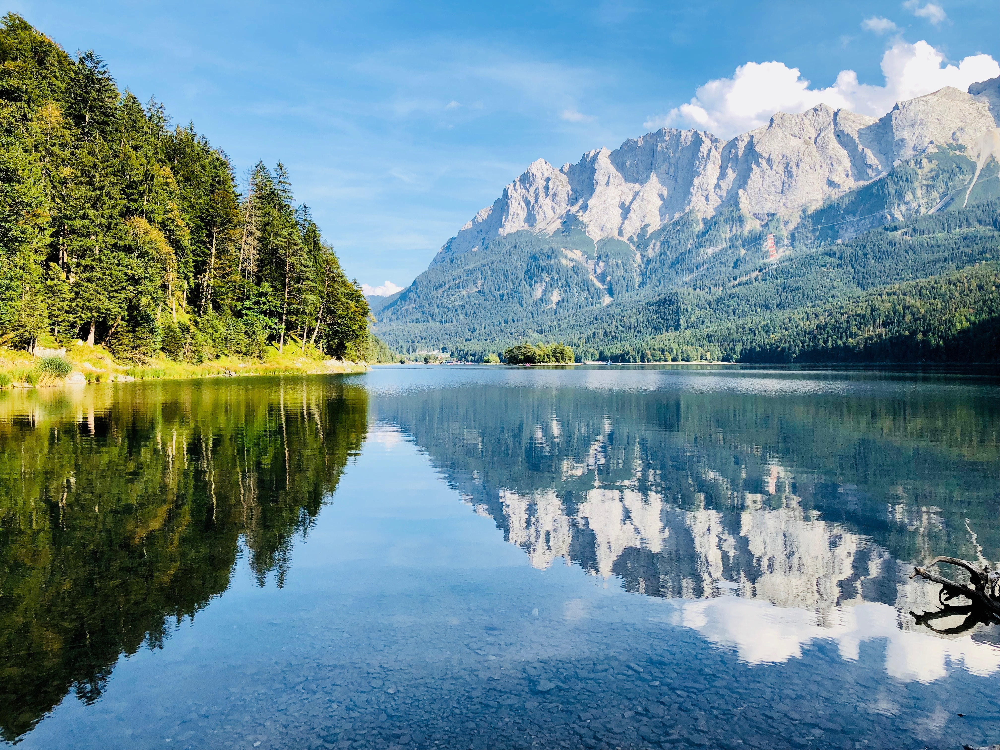

Bienvenidos a GUIAA
Foto de Matthias Schröder en Unsplash
En GUIAA, nos dedicamos a brindar soluciones hídricas innovadoras y sostenibles para enfrentar los desafíos del agua en el siglo XXI.
Servicios
Plantas Desalinizadoras
Ofrecemos plantas desalinizadoras basadas en HDH utilizando energía de hidrógeno verde. Nuestro proceso produce O2, agua pura y sal. Gracias a nuestra tecnología de punta, podemos garantizar un suministro constante de agua potable, incluso en las regiones más áridas del mundo.
Consultoría
Nuestro equipo de expertos ofrece servicios de consultoría para resolver problemas hídricos en tu región o país. Realizamos estudios de factibilidad, evaluaciones de recursos hídricos y desarrollamos estrategias personalizadas para garantizar el acceso a agua potable y la gestión sostenible de los recursos hídricos.
Acerca de nosotros
En GUIAA, somos un grupo de ingenieros y científicos apasionados por la innovación tecnológica y la gestión sostenible del agua. Con sedes en Buenos Aires y Caleta Olivia, nuestra misión es brindar soluciones integrales y accesibles para abordar los desafíos hídricos en todo el mundo.
Desde nuestra fundación, hemos trabajado en una amplia variedad de proyectos en diferentes sectores, incluidos la industria, la agricultura y el suministro de agua potable. Nuestro enfoque holístico y adaptable nos permite enfrentar eficazmente los problemas hídricos, desde la escasez de agua hasta la contaminación y la mala gestión de los recursos.
Contacto
Si tienes alguna consulta o deseas obtener más información acerca de nuestros servicios, no dudes en contactarnos. Estamos comprometidos a ofrecer soluciones hídricas de calidad y un servicio al cliente excepcional.
Email: contacto@guiia.com
Teléfono: +54 9 11 1234 5678